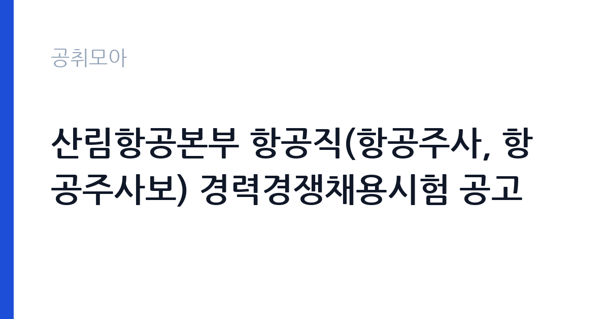

[국가기관] 산림항공본부 항공직(항공주사, 항공주사보) 경력경쟁채용시험 공고
산림청 산림항공본부 · 전국 · 마감 2026-10-23 (D-12) · 출처 나라일터

한눈에 보는 모집 조건
| 기관 | 산림청 산림항공본부 |
|---|---|
| 공고명 | 산림항공본부 항공직(항공주사, 항공주사보) 경력경쟁채용시험 공고 |
| 고용형태 | 정규직 |
| 근무지 | 전국 |
| 게시일 | 2026-10-12 |
| 마감일 | 2026-10-23 (D-12) |
지원자격, 이렇게 읽으세요
- 항공주사 3명 항공주사보 1명
- 접수 ~2026-10-23 마감
- 세부 조건은 원문 공고문 확인
항공주사는 항공6급, 항공주사보는 항공7급에 해당하는 일반직 국가공무원 직급입니다. 응시자는 해당 모집분야의 실무경력과 관련 자격을 갖춰야 하며, 조종 분야는 사업용 이상의 조종사 자격과 일정 수준의 총 비행시간이 요구되는 것이 기존 산림항공본부 공고의 관례였습니다. 정비 분야는 항공정비사 자격과 실무경력이 핵심 심사 대상이 됩니다. 국가공무원법상 임용 결격사유에 해당하지 않아야 하며, 세부 응시자격과 경력 인정 기준은 반드시 원문 공고문의 응시자격표에서 대조하셔야 합니다.
이 공고의 포인트
이 공고의 가장 큰 특징은 국가직 6급과 7급 일반직을 경력경쟁으로 뽑는다는 점입니다. 공개경쟁채용과 달리 필기시험 부담이 없고, 서류와 면접으로 실무 역량을 직접 평가받습니다. 산림항공이라는 특수 분야라 응시 문턱이 명확한 대신, 요건을 갖춘 지원자 Pool이 넓지 않아 준비된 분에게는 충분히 승산이 있는 시험입니다. 산불 대응이라는 분명한 국가 임무를 맡는 자리라는 점도 지원 동기를 세우기 좋습니다.
전형은 어떻게 진행되나
경력경쟁채용시험은 일반적으로 서류전형과 면접시험의 순서로 진행됩니다. 서류전형에서는 응시자격 충족 여부와 직무 적합성을 심사하고, 면접시험에서는 공직관과 전문지식, 현장 대응 역량을 평가합니다. 최종합격자는 공무원 신체검사와 신원조사를 거쳐 임용됩니다. 전형 단계별 일정과 합격자 발표일은 원문 공고문과 산림항공본부 홈페이지 공지에서 확인하셔야 합니다.
이런 분께 추천해요
- 헬기 조종 경력을 보유한 사업용 이상 조종사 자격 소지자입니다. 총 비행시간과 기종 경력이 곧 경쟁력이 되는 공고입니다.
- 항공기 정비 실무경력과 항공정비사 자격을 갖춘 분입니다. 특수임무 항공기 정비 경험이 있다면 자기소개서와 면접의 소재가 풍부합니다.
- 산림과 항공이라는 두 전문성이 만나는 분야에서 국가공무원으로 일하고 싶은 분입니다. 산불 현장 대응이라는 명확한 사명감이 지원 동기가 됩니다.
지원 전 체크리스트
- 모집분야별 응시자격(자격증 종류와 비행시간, 경력연수)을 원문 공고문에서 한 줄씩 대조하셨습니까.
- 경력증명서와 비행시간 증빙, 자격증 사본 등 증빙서류를 접수 마감 전에 발급받으셨습니까.
- 접수 마감일시인 10월 23일을 달력에 표시하고, 마감일 접수를 피하셨습니까.
- 공무원 임용 결격사유와 병역 사항 등 공통 요건을 스스로 점검하셨습니까.
모집 일정과 제출 타이밍
공고 게시일은 2026년 10월 12일이며 접수 마감은 10월 23일입니다. 접수 기간이 11일 남짓으로 길지 않으므로, 비행시간 증빙처럼 발급에 시간이 걸리는 서류부터 먼저 준비하시는 편이 좋습니다. 마감 당일은 접속이 몰릴 수 있으니 최소 하루 전에는 접수를 마치시기를 권합니다.
직무 이해하기: 국가기관
산림항공본부는 산림청 소속으로 산불진화와 산림병해충 항공방제, 산악구조와 응급환자 후송, 산림사업 자재 운송을 담당하는 기관입니다. 본부는 원주에 있으며 전국 각지에 산림항공관리소를 두고 헬기를 분산 배치합니다. 항공직 공무원은 조종과 정비, 운항관리와 안전관리 실무를 맡으며, 산불 시즌에는 비상대기 체제로 전환되는 현장 중심 조직입니다.
자기소개서 작성 팁
경력경쟁채용의 자기소개서는 경력기술서가 중심이 됩니다. 총 비행시간과 주력 기종, 수행 임무의 종류와 횟수를 수치로 제시하시고, 비정상 상황 대처 경험이 있다면 판단 과정까지 구체적으로 서술하십시오. 산림항공 임무와 연결되는 지원 동기를 한 문단으로 정리하시면 면접까지 이어지는 일관된 스토리가 됩니다.
면접 준비 포인트
면접에서는 조종과 정비 전문지식, 산불 현장과 같은 고압 상황에서의 판단력을 묻는 질문이 나옵니다. 항공안전 규정과 본인의 실무 경험을 연결해서 답변하시고, 국가공무원으로서의 공직관과 청렴 의지도 함께 준비하십시오. 예상 질문에 대한 답변을 말로 소리 내어 연습하시면 실전에서 떨림이 줄어듭니다.
급여·근무조건 읽는 법
항공주사와 항공주사보는 각각 6급과 7급 일반직 공무원 봉급표가 적용됩니다. 기본급에 더해 직급보조비와 정액급식비, 명절휴가비와 연가보상비, 시간외근무수당 등 각종 수당이 별도로 지급되며, 초임 호봉은 관련 경력 환산 결과에 따라 결정됩니다. 정확한 초임 보수 수준은 해당 공고문의 보수 조건과 공무원보수규정에서 확인하셔야 합니다.
자주 묻는 질문
- 비전공자도 지원할 수 있습니까?
경력경쟁채용은 학력보다 해당 분야의 자격과 실무경력을 평가합니다. 모집분야의 응시자격을 충족하면 전공과 무관하게 지원이 가능하며, 세부 기준은 원문 공고문에서 확인하십시오. - 근무지는 어디가 됩니까?
산림항공본부와 전국 각지의 산림항공관리소에서 근무하게 됩니다. 배치 원칙과 순환보직 기준은 임용 안내에서 확인하시고, 전국 근무 가능 여부를 미리 정리해 두십시오. - 임기제공무원과 무엇이 다릅니까?
이 공고는 정년이 보장되는 일반직 국가공무원 선발입니다. 임기와 계약에 따라 근무하는 임기제와 달리 공무원연금과 승진 체계가 적용된다는 점이 다릅니다.
함께 보면 좋은 공고
[국가기관] 충남대학교「의과대학 교육혁신 지원사업」 행정사무원(기간제 계약직 자체직원) 채용 공고 — 마감 2026-10-16[국가기관] 경기도남부경찰청 5기동대 환경미화(무기계약직)채용 공고 — 마감 2026-10-22[국가기관] 충남대학교 의과대학 「의학교육 활성화 지원사업」 행정사무원(기간제 계약직 자체직원) 채용 공고 — 마감 2026-10-16출처: 나라일터 공개정보를 바탕으로 공취모아가 정리한 안내글입니다. 모집 조건·일정은 변경될 수 있으니 지원 전 반드시 원문 공고문을 확인하세요. 본 글은 정보 제공용이며 합격을 보장하지 않습니다.